Almost every function in ggdensity accepts a
method argument—this is true for geom_hdr()
and other layer functions (geom_hdr_lines(),
geom_hdr_points(), …), as well as get_hdr()
and get_hdr_1d(). This vignette summarizes the many ways in
which the method argument can be specified; first looking
at it from a more basic perspective, then from the perspective of a
developer wanting to implement additional estimators.
Using ggdensity’s method_*()
functions
First, let’s load the necessary packages and generate some sample data.
library("ggdensity"); theme_set(theme_minimal(8))
#> Loading required package: ggplot2
theme_update(legend.position = "none") # Suppressing legends for readability
set.seed(1)
df <- data.frame(x = rnorm(500), y = rnorm(500))
p <- ggplot(df, aes(x, y))
p + geom_point()
The easiest way to plot HDRs with geom_hdr() (or any
other layer function from ggdensity) with a specified
density estimator is to provide a character object to the
method argument:
p + geom_hdr(method = "kde")
p + geom_hdr(method = "mvnorm")
p + geom_hdr(method = "histogram")
p + geom_hdr(method = "freqpoly") 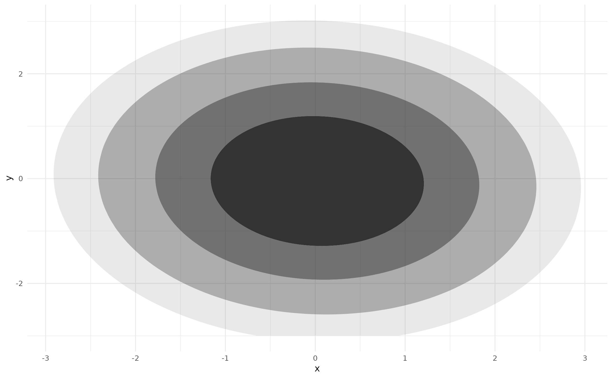
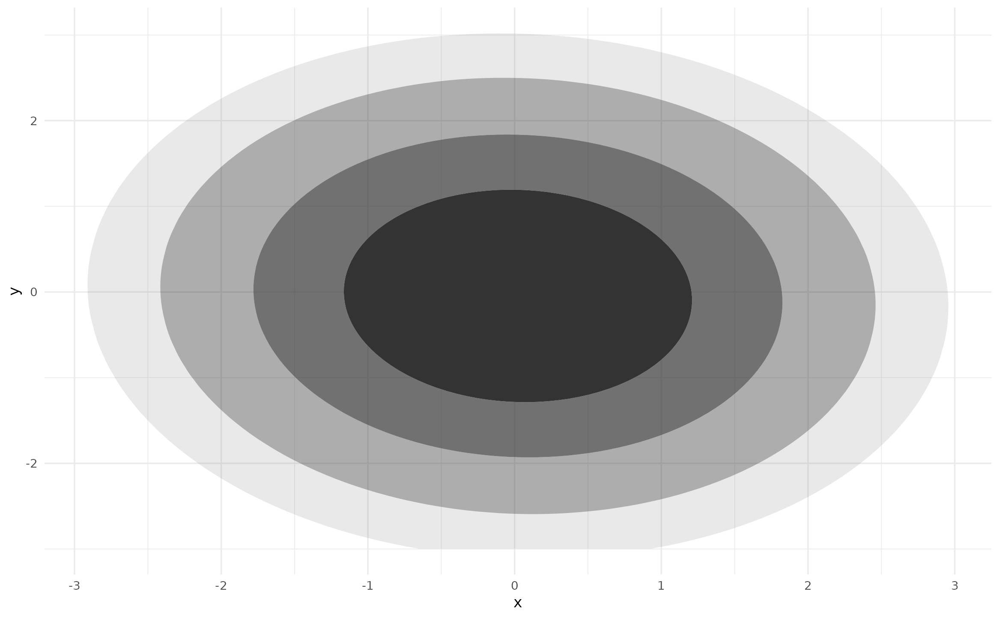 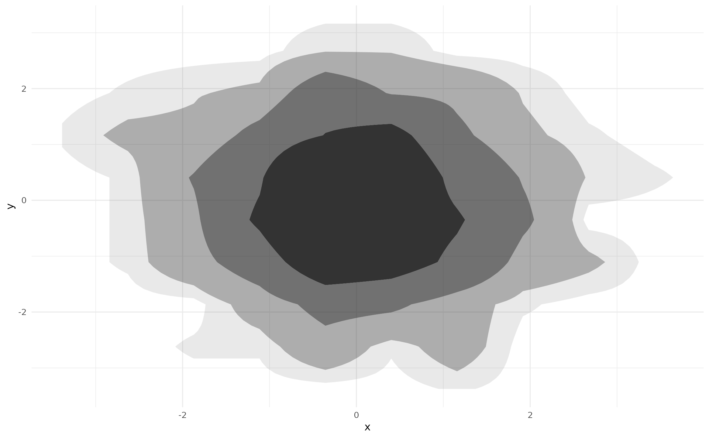
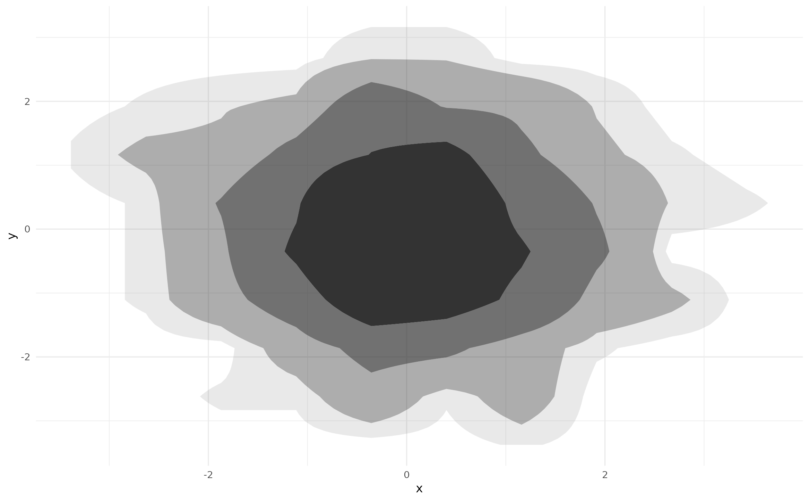
However, as of ggdensity v1.0.0 there is an
alternative approach—providing a method_*() function
call:
p + geom_hdr(method = method_kde())
p + geom_hdr(method = method_mvnorm())
p + geom_hdr(method = method_histogram())
p + geom_hdr(method = method_freqpoly())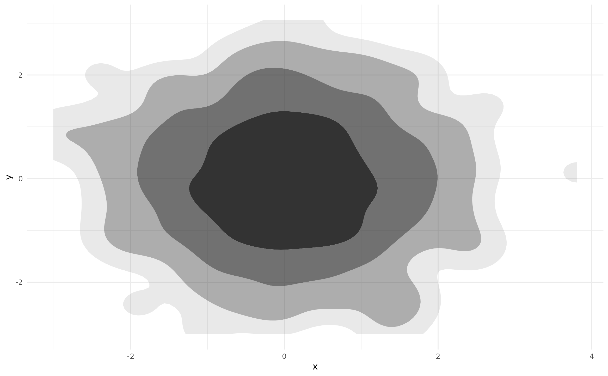


The default behaviors of these two approaches are the same and always
will be—in this way, they are completely interchangeable. However, the
method_*() function call is required to estimate HDRs with
non-default estimator parameters. For example, we can set the
adjust parameter to apply a multiplicative adjustment to
the heuristically determined bandwidth in method_kde()
(which itself uses the one computed by
MASS::bandwidth.nrd()):
p + geom_hdr(method = method_kde(adjust = 1/2))
The relevant parameters for each method are documented in their
respective ?method_* help pages. Note that these parameters
can not be provided to geom_hdr() or
stat_hdr() and thus are not accessible if a character value
is provided to method.
The method argument of get_hdr() functions
in the same way:
res <- get_hdr(df, method = method_kde(adjust = 1/2))
str(res)
#> List of 3
#> $ df_est:'data.frame': 10000 obs. of 5 variables:
#> ..$ x : num [1:10000] -3.01 -2.94 -2.87 -2.8 -2.73 ...
#> ..$ y : num [1:10000] -3 -3 -3 -3 -3 ...
#> ..$ fhat : num [1:10000] 4.72e-17 1.30e-15 2.88e-14 5.16e-13 7.44e-12 ...
#> ..$ fhat_discretized: num [1:10000] 2.00e-19 5.50e-18 1.22e-16 2.18e-15 3.15e-14 ...
#> ..$ hdr : num [1:10000] 1 1 1 1 1 1 1 1 1 1 ...
#> $ breaks: Named num [1:5] 0.00422 0.01273 0.03024 0.07544 Inf
#> ..- attr(*, "names")= chr [1:5] "99%" "95%" "80%" "50%" ...
#> $ data :'data.frame': 500 obs. of 3 variables:
#> ..$ x : num [1:500] -0.626 0.184 -0.836 1.595 0.33 ...
#> ..$ y : num [1:500] 0.0773 -0.2969 -1.1832 0.0113 0.9916 ...
#> ..$ hdr_membership: num [1:500] 0.5 0.5 0.8 0.8 0.5 0.95 0.8 0.5 0.5 0.5 ...For details on the output of get_hdr(), see
?get_hdr.
method_*_1d() functions
In ggdensity, it is possible to estimate and plot
1-dimensional HDRs with geom_hdr_rug() and
get_hdr_1d(). These functions also accept a
method argument, but they do not accept the previously
discussed method_*() functions. Instead they accept the
1-dimensional analogues: method_*_1d().
p +
geom_point() +
geom_hdr_rug(method = method_kde_1d())
p +
geom_point() +
geom_hdr_rug(method = method_norm_1d())
p +
geom_point() +
geom_hdr_rug(method = method_histogram_1d())
p +
geom_point() +
geom_hdr_rug(method = method_freqpoly_1d())

 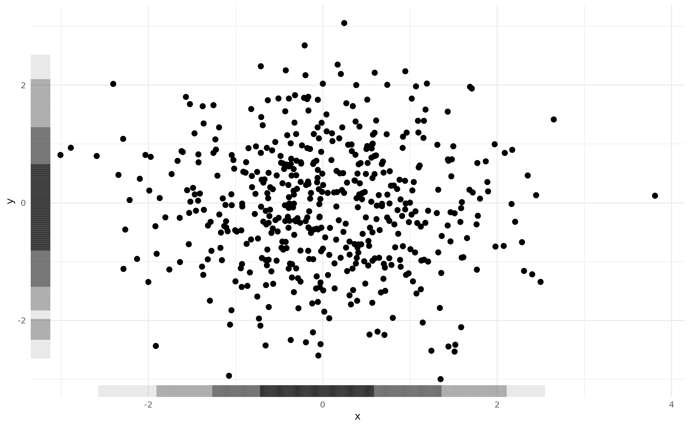
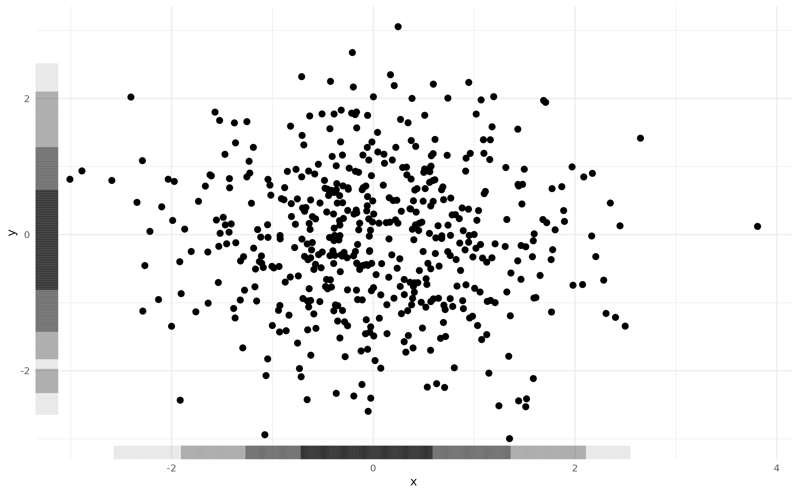
Just like we saw with geom_hdr(),
geom_hdr_rug() also accepts character values for
method:
p +
geom_point() +
geom_hdr_rug(method = "kde")
p +
geom_point() +
geom_hdr_rug(method = "norm")
p +
geom_point() +
geom_hdr_rug(method = "histogram")
p +
geom_point() +
geom_hdr_rug(method = "freqpoly") 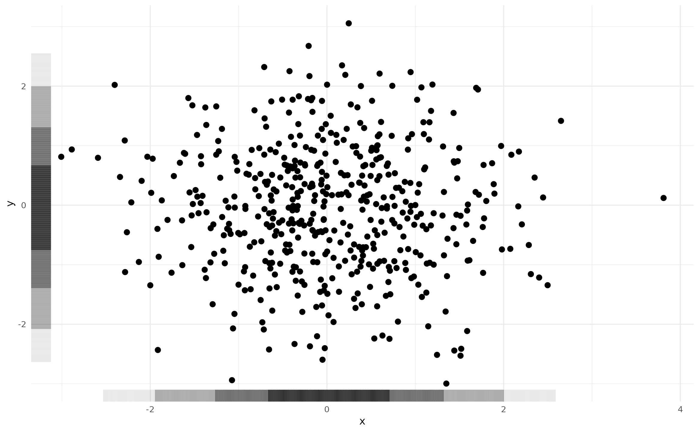
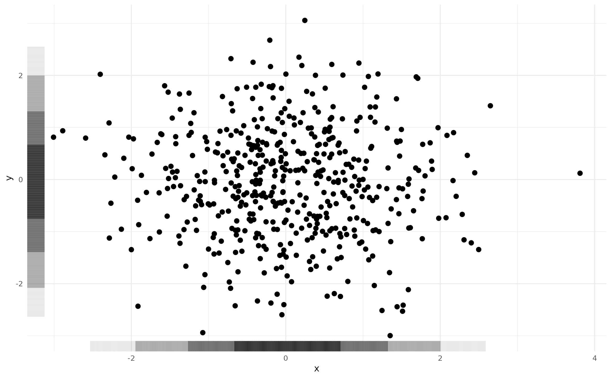

Because the return values of the method_*() functions
are incompatible with the 1-dimensional HDR estimation procedure, if a
2-dimensional method is specified the following error message is
issued:
p +
geom_point() +
geom_hdr_rug(method = method_kde())
#> Warning: Computation failed in `stat_hdr_rug()`
#> Caused by error in `get_hdr_1d()`:
#> ! Invalid `method` argument -- did you forget the `_1d()`?Lastly, we see that the method argument of
get_hdr_1d() behaves similarly.
res <- get_hdr_1d(df$x, method = method_kde_1d())
str(res)
#> List of 3
#> $ df_est:'data.frame': 512 obs. of 4 variables:
#> ..$ x : num [1:512] -3.01 -2.99 -2.98 -2.97 -2.95 ...
#> ..$ fhat : num [1:512] 0.00728 0.00748 0.00769 0.00789 0.00809 ...
#> ..$ fhat_discretized: num [1:512] 9.73e-05 1.00e-04 1.03e-04 1.05e-04 1.08e-04 ...
#> ..$ hdr : num [1:512] 1 1 1 1 1 1 1 1 1 1 ...
#> $ breaks: Named num [1:5] 0.0188 0.0562 0.1601 0.3146 Inf
#> ..- attr(*, "names")= chr [1:5] "99%" "95%" "80%" "50%" ...
#> $ data :'data.frame': 500 obs. of 2 variables:
#> ..$ x : num [1:500] -0.626 0.184 -0.836 1.595 0.33 ...
#> ..$ hdr_membership: num [1:500] 0.5 0.5 0.8 0.95 0.5 0.8 0.5 0.8 0.5 0.5 ...Again, for details on the above output of get_hdr_1d(),
see ?get_hdr_1d.
A detailed look at method_*() functions
Now that we understand the ways in which method can be
specified let’s look at the internals of the method_*()
functions. Note: the implementations discussed in this section depend
heavily on topics in functional programming, especially closures
and function
factories. While not necessary, a good understanding of these ideas
is helpful—the linked chapters from Hadley Wickham’s Advanced R
are a great place to start.
Looking at the definition of method_kde(), we see that
it is a function of h and adjust, returning a
closure with arguments data, n,
rangex, and rangey. The closure passes the
x and y columns of data to
MASS::kde2d(), returning the estimated density evaluated on
a grid with columns x, y, and
fhat. This closure is what geom_hdr() expects
as its method argument, and is how the HDRs are estimated
(via get_hdr()).
method_kde
function (h = NULL, adjust = c(1, 1))
{
function(data, n, rangex, rangey) {
if (is.null(h)) {
h <- c(MASS::bandwidth.nrd(data$x), MASS::bandwidth.nrd(data$y))
}
h <- h * adjust
kdeout <- MASS::kde2d(x = data$x, y = data$y, n = n,
h = h, lims = c(rangex, rangey))
df <- with(kdeout, expand.grid(x = x, y = y))
df$fhat <- as.vector(kdeout$z)
df
}
}
<bytecode: 0x5604861079f0>
<environment: namespace:ggdensity>Both method_histogram() and
method_freqpoly() behave similarly, accepting parameters
governing the density estimation procedure and returning a closure with
arguments data, n, rangex, and
rangey. However, these functions are significantly more
complicated as the density estimation procedures are implemented
entirely in ggdensity.
method_mvnorm() is different in a few ways. The closure
it returns is a function of just one argument: data. This
is because it does not return the estimated density evaluated on a grid.
Instead, it returns yet another closure with (vectorized) arguments
x and y. As in method_kde(), the
return value of the closure is a representation of the estimated pdf.
The difference is the manner in which the pdf is represented. Whereas
before we had a pdf defined by a discrete approximation on a grid, we
now have an explicit definition of the pdf in terms of x
and y.
method_mvnorm
function ()
{
function(data) {
data_matrix <- with(data, cbind(x, y))
mu_hat <- colMeans(data_matrix)
R <- chol(cov(data_matrix))
function(x, y) {
X <- cbind(x, y)
tmp <- backsolve(R, t(X) - mu_hat, transpose = TRUE)
logretval <- -sum(log(diag(R))) - log(2 * pi) - 0.5 *
colSums(tmp^2)
exp(logretval)
}
}
}
<bytecode: 0x560485cfc060>
<environment: namespace:ggdensity>To summarize each of the above cases: in the first example, the
method_*() function returned a closure with arguments
data, n, rangex, and
rangey which itself returned the estimated density
evaluated on a grid; in the second, the method_*() function
returned a closure with a single argument, data, which
itself returned a closure with arguments x and
y, representing the estimated density explicitly. In both
cases, the method_*() function can have any number of
parameters governing the density estimation procedure.
These are the two ways the method argument may be
specified. The first is necessary for cases in which an explicit
definition of the estimated density is not computationally feasible (for
example, KDEs). The second is an easier option for the cases in which a
closed form of the estimated density is available (for example,
parametric estimators).
Let’s look at how we might define our own method_*()
functions in each case, beginning with a simple parametric
estimator.
Implementing a method returning a PDF
In ggdensity, method_mvnorm() estimates
HDRs based on the parametric multivariate normal model. If we wanted to
fit a simpler model in which the data is further assumed to be
independent, we could implement method_mvnorm_ind().
method_mvnorm_ind <- function() {
function(data) {
xbar <- mean(data$x)
ybar <- mean(data$y)
sx <- sd(data$x)
sy <- sd(data$y)
# joint pdf is simply the product of the marginals
function(x, y) dnorm(x, xbar, sx) * dnorm(y, ybar, sy)
}
}To use our method_mvnorm_ind(), we just need to supply
it to geom_hdr()’s method argument.

If we transform our data to have non-zero covariance we still see the major and minor axes of the contours coincide with the plot axes—exactly what we would expect with this (incorrectly) constrained model.
A <- matrix(c(
2*cos(pi/6), -2*sin(pi/6),
1*sin(pi/6), 1*cos(pi/6)
), byrow = TRUE, ncol = 2)
df_rot <- as.data.frame(as.matrix(df) %*% A)
colnames(df_rot) <- c("x", "y")
ggplot(df_rot, aes(x, y)) +
geom_hdr(method = method_mvnorm_ind()) +
geom_point(size = .4) +
coord_fixed(xlim = c(-6, 6), ylim = c(-6, 6))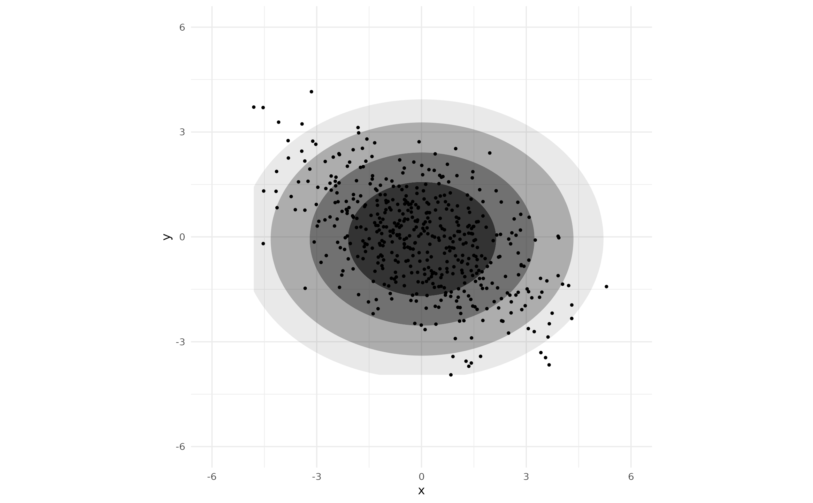
Notice, method_mvnorm_ind() accepts no arguments. The
density estimation procedure is so simple that there are no parameters
to govern it. To allow for circular models in which the fitted variances
are required to be equal, we can implement a circular
argument.
method_mvnorm_ind <- function(circular = FALSE) {
function(data) {
xbar <- mean(data$x)
ybar <- mean(data$y)
if (circular) {
sx <- sd(c(data$x - xbar, data$y - ybar))
sy <- sx
} else {
sx <- sd(data$x)
sy <- sd(data$y)
}
function(x, y) dnorm(x, xbar, sx) * dnorm(y, ybar, sy)
}
}Now, the contours are perfectly circular.
ggplot(df_rot, aes(x, y)) +
geom_hdr(method = method_mvnorm_ind(circular = TRUE)) +
geom_point(size = .4) +
coord_fixed(xlim = c(-6, 6), ylim = c(-6, 6))
In the above plot, the upper and lower portions of the HDRs are cut
off. This is because the default behavior of ggdensity
is to not draw HDRs outside of the “bounding box” around observed data.
This is not because we are using a custom
method_*() function. To fix this, we need to either set a
better ylim value for geom_hdr() or specify a
larger range in scale_y_continuous().
ggplot(df_rot, aes(x, y)) +
geom_hdr(method = method_mvnorm_ind(circular = TRUE), ylim = c(-6, 6)) +
geom_point(size = .4) +
coord_fixed(xlim = c(-6, 6), ylim = c(-6, 6))
ggplot(df_rot, aes(x, y)) +
geom_hdr(method = method_mvnorm_ind(circular = TRUE)) +
geom_point(size = .4) +
scale_y_continuous(limits = c(-6, 6)) +
coord_fixed(xlim = c(-6, 6), ylim = c(-6, 6)) 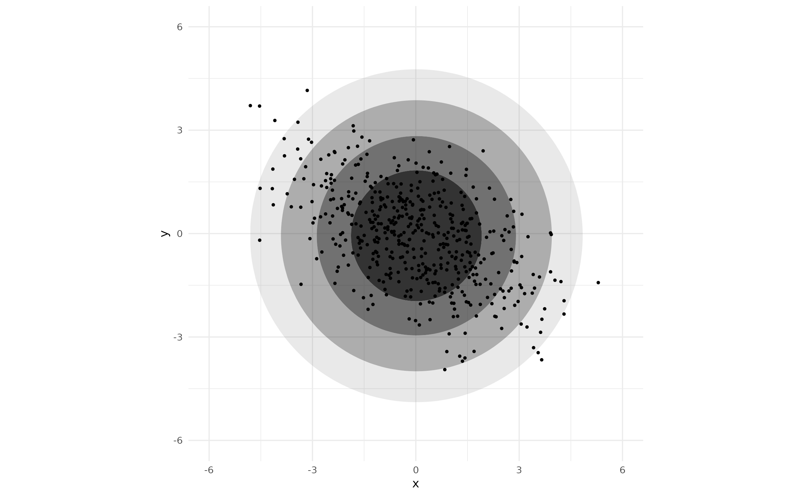
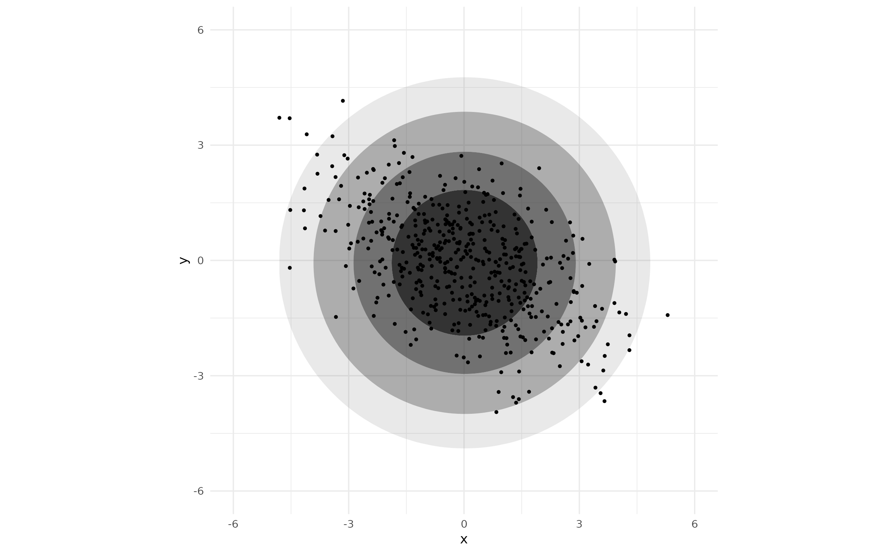
Notice, neither of these approaches involve arguments to
method_mvnorm_ind(). Internally, the closure returned by
method_mvnorm_ind() is used by get_hdr(),
along with information from the scales associated with the
ggplot object. It is the scales that need
adjusting, not anything related to the method argument.
Implementing a method returning an evaluated PDF
To illustrate the other case, in which the object returned by the
closure is the estimated density evaluated on a grid, we implement
method_mvnorm_ind_grid(). This estimates the same
independent normal density as method_mvnorm_ind(), the only
difference is the behavior of the returned closure.
method_mvnorm_ind_grid <- function() {
function(data, n, rangex, rangey) {
# First, we estimate the density -----------------------------
xbar <- mean(data$x)
ybar <- mean(data$y)
sx <- sd(data$x)
sy <- sd(data$y)
f_est <- function(x, y) dnorm(x, xbar, sx) * dnorm(y, ybar, sy)
# Return the density evaluated on a grid ---------------------
# df_grid defined by rangex, rangey, and n
df_grid <- expand.grid(
x = seq(rangex[1], rangex[2], length.out = n),
y = seq(rangey[1], rangey[2], length.out = n)
)
df_grid$fhat <- f_est(df_grid$x, df_grid$y)
df_grid
}
}See that returned closure has additional arguments n,
rangex, and rangey which define the grid.
Also, the grid is represented a data.frame with columns
x, y, and fhat, where
fhat is the (potentially unnormalized) density
estimate.
Again, to use our method_mvnorm_ind_grid() we provide it
to geom_hdr()’s method argument.
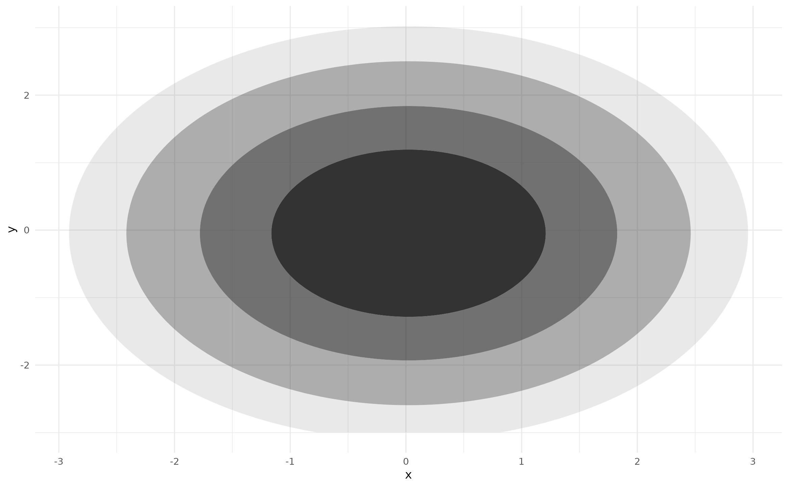
Like we saw in the previous example, we could prevent the HDRs from
being “cut off” by specifying either the x/ylim arguments
in geom_hdr() or by setting a larger range in
scale_x/y_continuous().
The method_*_1d() functions
We saw before that ggdensity uses
method_*_1d() functions for the estimation of 1-dimensional
densities. The internals of these functions are very similar to the
method_*() functions, the only differences are slight
changes to the arguments and return values of the returned closures.
Looking at the definition of method_kde_1d(), we see the
returned closure has arguments x, n, and
range. This is very similar to method_kde(),
the only difference is we are now dealing with univariate data: the
vector argument x is used instead of data, and
we have a single range parameter instead of
rangex and rangey. Similarly, the closure now
returns the estimated density evaluated on a univariate grid, with
columns x and fhat instead of the bivariate
grid with columns x, y, and fhat.
Finally, see that method_kde_1d() accepts several arguments
governing the density estimation procedure just like
method_kde().
method_kde_1d
function (bw = "nrd0", adjust = 1, kernel = "gaussian", weights = NULL,
window = kernel)
{
function(x, n, range) {
nx <- length(x)
if (is.null(weights)) {
weights <- rep(1/nx, nx)
}
else {
weights <- normalize(weights)
}
dens <- stats::density(x, bw = bw, adjust = adjust, kernel = kernel,
weights = weights, window = window, n = n, from = range[1],
to = range[2])
data.frame(x = dens$x, fhat = dens$y)
}
}
<bytecode: 0x560487b575c0>
<environment: namespace:ggdensity>Estimated univariate densities can also be represented explicitly, as
illustrated by method_norm_1d(). Comparing this to the
previously discussed method_mvnorm() we see that little has
changed: the closure is now a function of a vector x
instead of data and returns a function of one variable
(x) instead of two (x and y).
method_norm_1d
function ()
{
function(x) {
mu_hat <- mean(x)
sigma_hat <- sd(x)
function(x) dnorm(x, mu_hat, sigma_hat)
}
}
<bytecode: 0x56048e331620>
<environment: namespace:ggdensity>Additional method_*_1d() functions can be implemented in
the same way as the 2-dimensional method_*() functions, so
long as the returned closure is structured in one of the two ways we
have seen here.